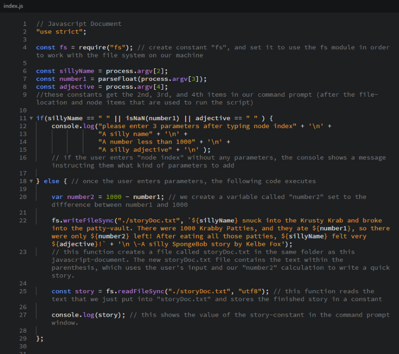
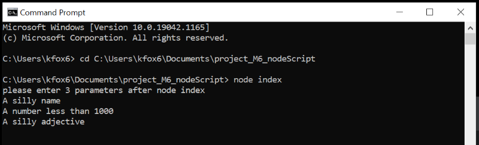
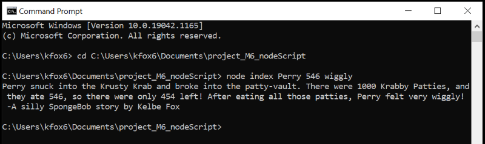
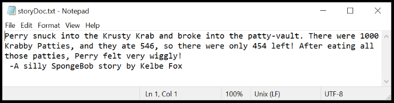

Node.js Location Object, History Object, and Arguments
In our previous unit, we learned that Node.js is a JavaScript runtime environment that can run scripts or other applications outside of a browser. In this unit, we worked with some of the built-in modules that work like extra sets of Javascript libraries. These modules can be loaded by using the built-in require() function. We tried out the "fs" module, which has functions for working with the local file system, and even functions for reading and writing files.
Next, we learned how to use location objects and history objects to redirect or reload the browser. This allows us to have similar functionality to hyperlinks, while being able to use or even manipulate the browser's history instead of linking to specific URL's.
Finally, we learned how to pass arguments to a script using the Command Prompt window. We did this with the process-object combined with the argv-property. The argv-property places our arguments in an array after the path to the node command and the path to the script. These arguments can be used within the script itself.
Location and History Objects Project
Both of these buttons use a Javascript history-object rather than a typical hyperlink. The "back" button uses the history.back method to load the most recent page from the browser's history. The "home" button uses the history.go method to go two steps back, which is enough to get to the home page.
Argument Project
In this project, I made a script that accepts 2 string arguments and a numerical argument. The numerical argument is used to in a quick calculation, and then all the arguments are used to create a funny story (a new string). My script then writes that information into a separate text document as well as displaying it in the Command Prompt window. The below screenshots show the code along with a step by step explanation, and we see screenshots of the results afterward.
Below we see what happens when a user runs the script without any parameters.
Here is what happens when the user runs our script with parameters.
We can also open the new storyDoc.txt file to see that the script has also written my story into that document.
